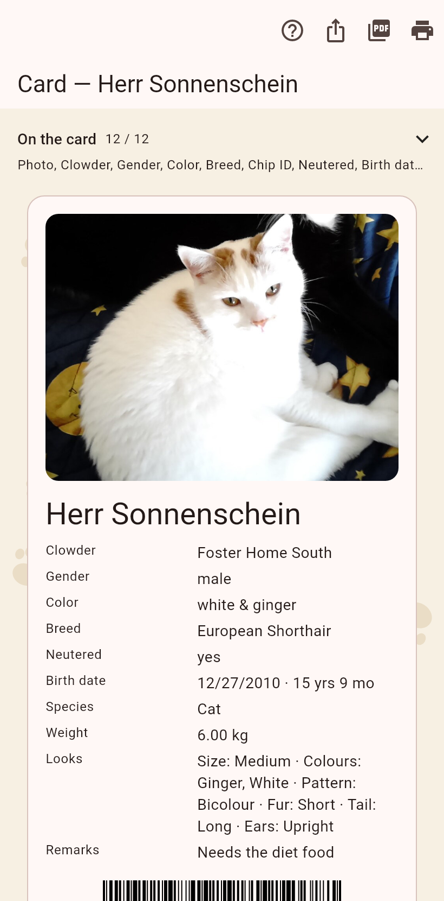

The card of a cat is the one sheet you hand to someone: photo, the values you pick, the IDs as codes.

The chips at the top choose the fields that appear; the choice is remembered. An ID can print as plain text, a QR or a barcode, and a position becomes a QR that opens a map plus a short Plus Code. The age stands beside the birth date; a cat that has died shows the age it reached.
Share as image, share as PDF, print: the three in the bar. The image goes to any messenger, the PDF to a mail or a printer. A home has a card too, with the cats living there.